In my journey to understand the intricacies of player performance in EA Sports FC (EAFC), I set out to explore how the game's player data mirrors real-world football dynamics. The goal was to provide actionable insights that can help coaches, players, and decision-makers make informed decisions both on and off the pitch.
First, I delved into the dataset containing attributes of over 17,000 players, with 41 different metrics including Pace, Shooting, Passing, Dribbling, and Defending. Understanding the structure and size of this dataset is akin to a coach reviewing a squad list before a match. It provided a comprehensive overview, ensuring that I had a robust foundation for my analysis.
Next, I examined the summary statistics and checked for missing values. The average overall rating was 66.98 with a standard deviation of 6.98, while the mean passing attribute stood at 51.52. Importantly, there were no missing values in key columns, ensuring the reliability of my subsequent analyses. This step is critical, much like a scout ensuring they have complete data on players before making assessments.
To get a sense of the player demographics, I visualized distributions of player positions, ages, overall ratings, preferred foot, and gender. I discovered a high concentration of players in right-wing and striker positions, with the majority aged between 20 and 30, peaking around 25 years. Interestingly, about 70% of players were right-footed, and there were significantly more male players. These insights help coaches understand the composition of their squad and focus on maintaining peak performance levels while preparing for player development.
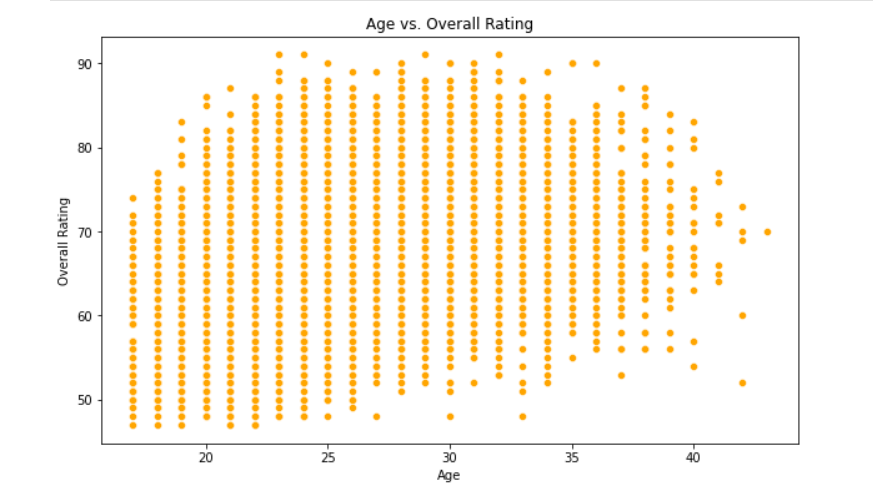 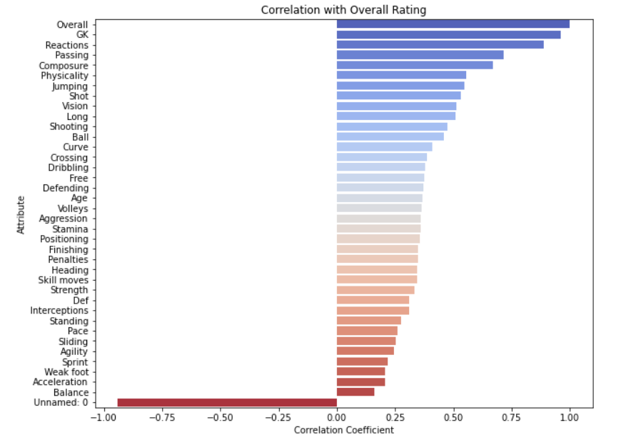 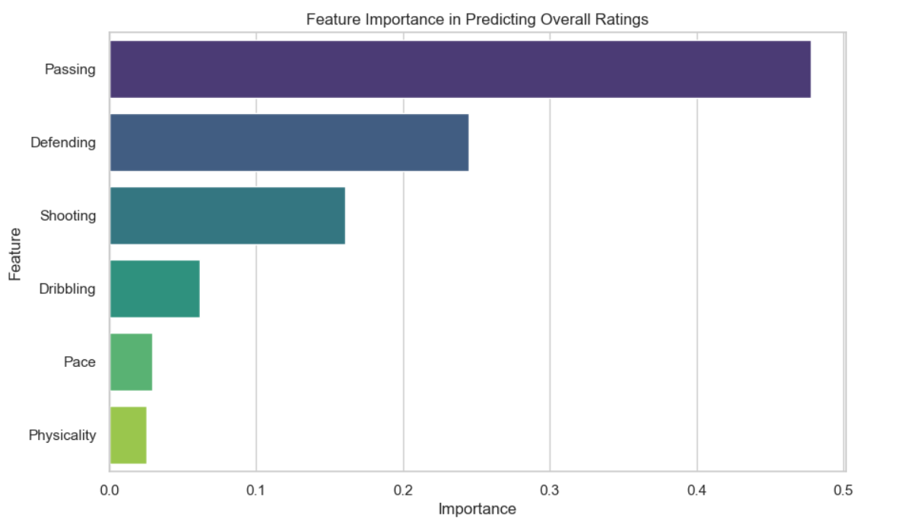 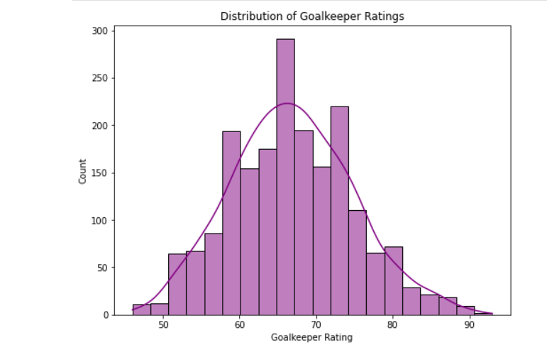 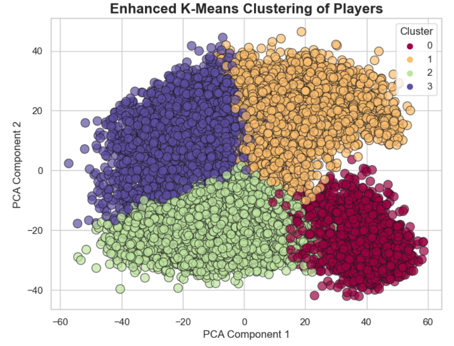 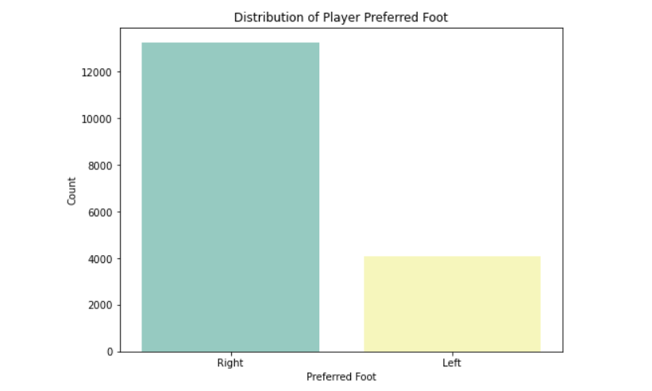 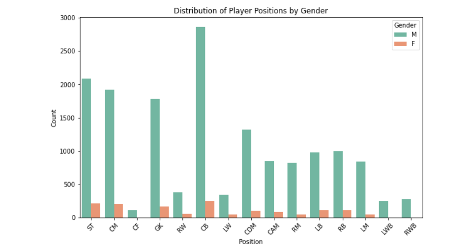 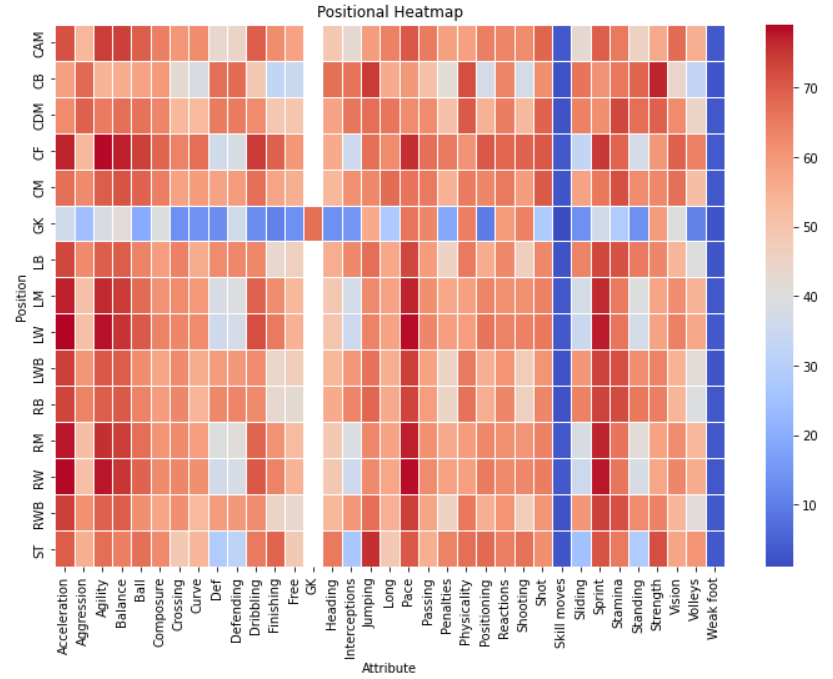 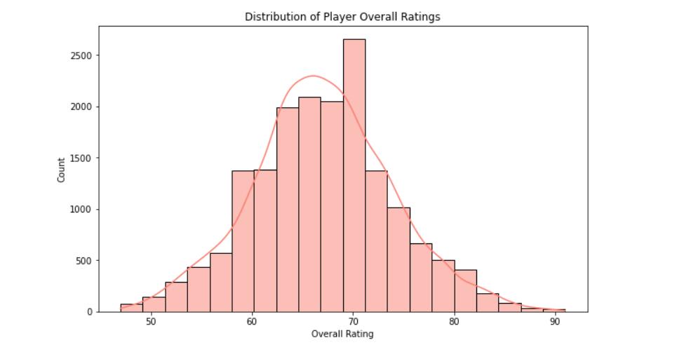I employed machine learning models, including Linear Regression and Random Forest Regressor, to predict overall ratings. The Random Forest model performed exceptionally well with a Mean Squared Error (MSE) of 1.67 and an R² of 0.96. This indicates high accuracy in predicting player ratings, making it a valuable tool for scouting and predicting player development potential.
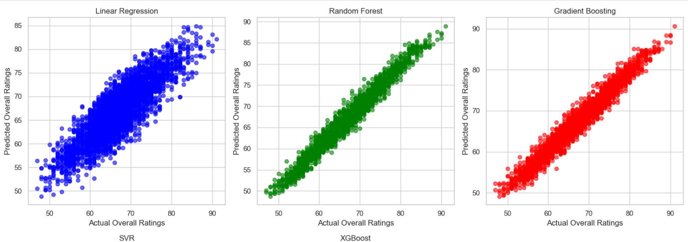 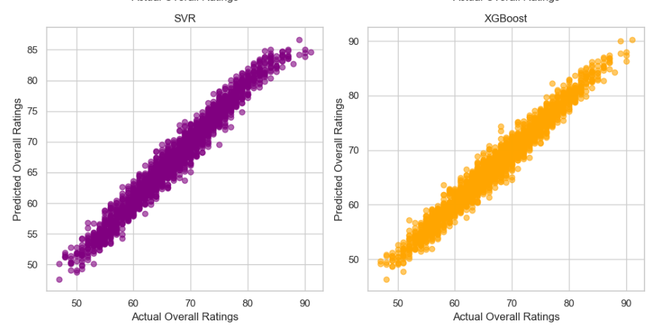 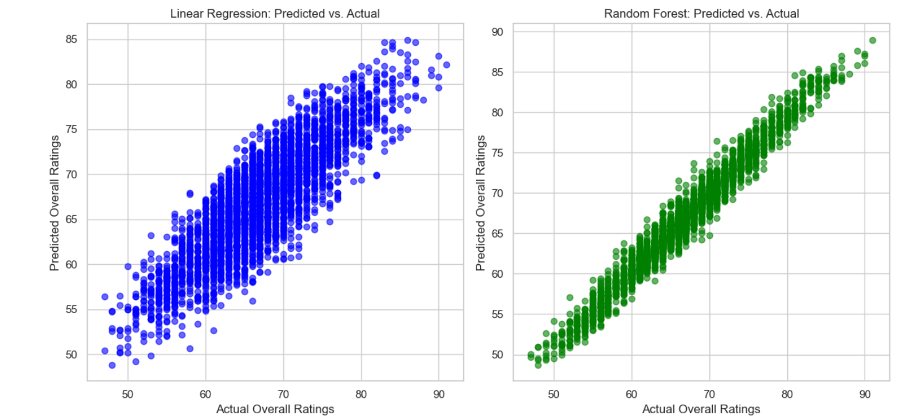SHAP values provided transparency in understanding which attributes contribute most to performance. Defending, shooting, and passing were identified as high-impact features. This analysis informs individualized training plans and tactical decisions, much like detailed player evaluations in real football.
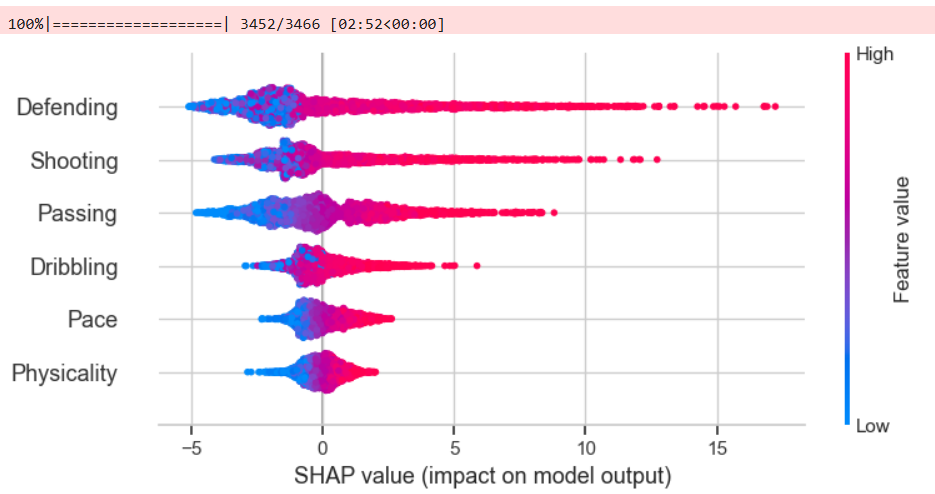 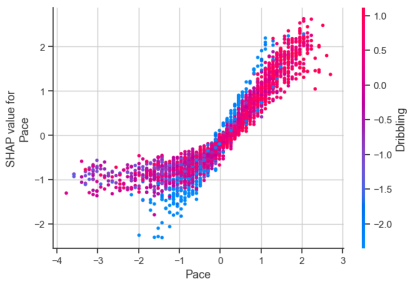